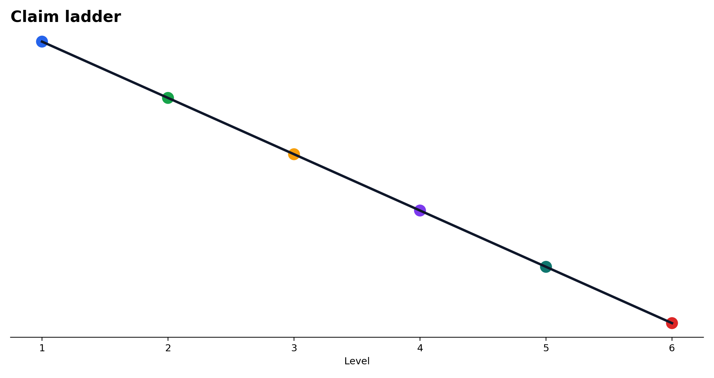
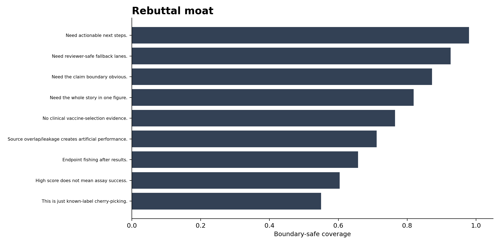
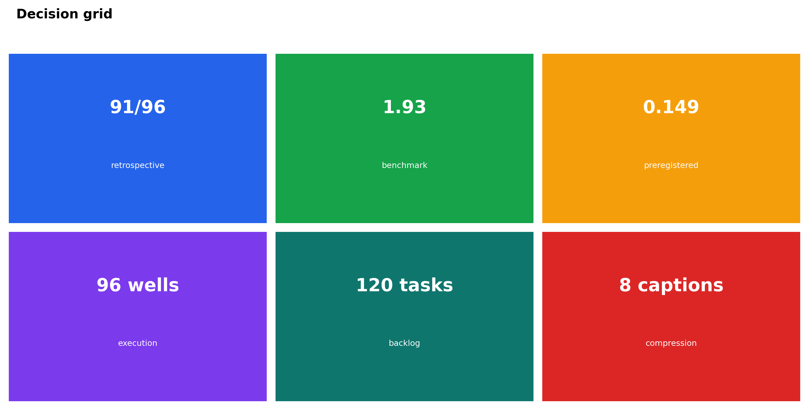
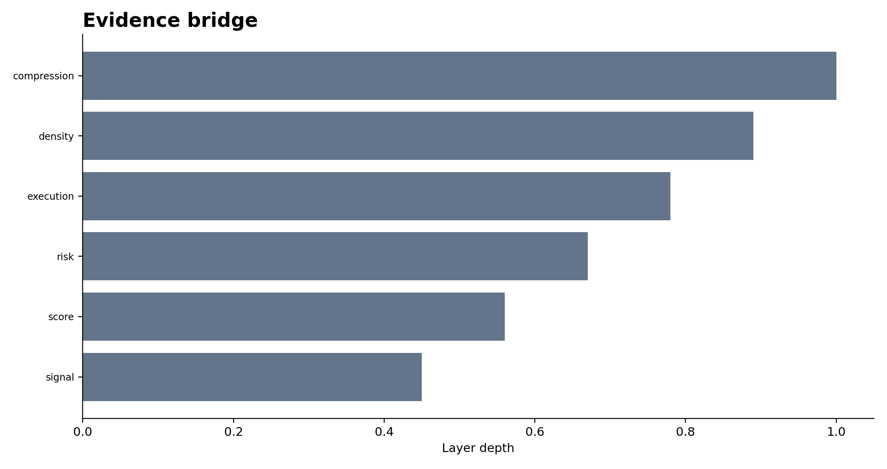
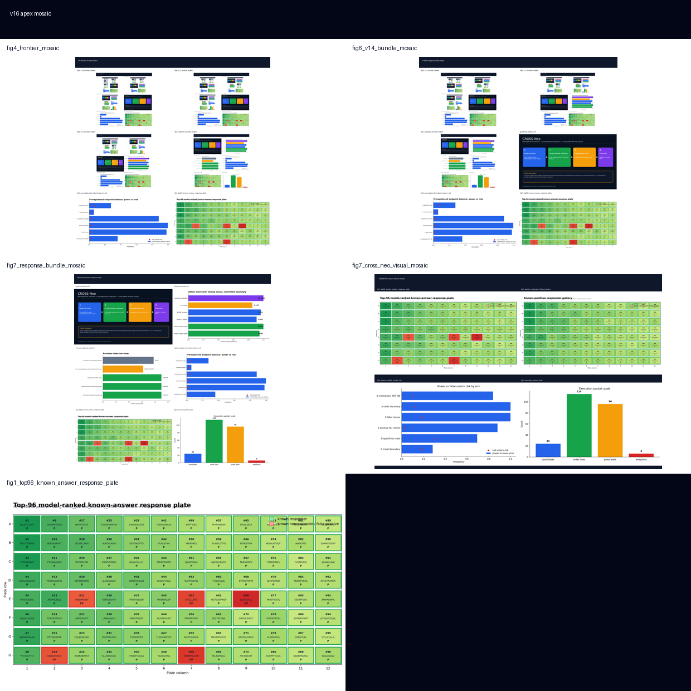
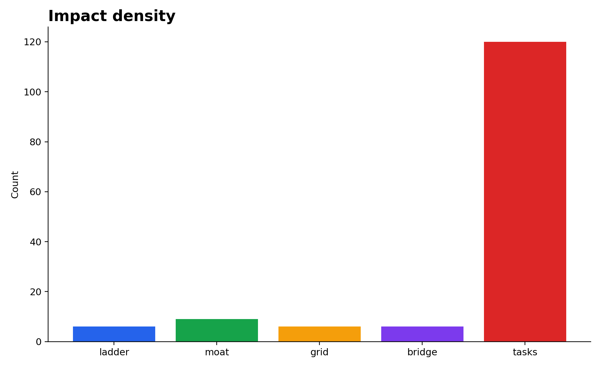

01Figures






02Claim ladder
| step | stage | headline | allowed_use | boundary |
|---|---|---|---|---|
| 1 | retrospective signal | 91/96 | known-answer demo | not prospective validation |
| 2 | benchmark recovery | 1.93x | score recovery | clean-CV only |
| 3 | pre-assay guardrail | 0.149 | preregistered endpoint lock | no post-hoc tuning |
| 4 | execution readiness | 96 wells | lab handoff | not a completed assay |
| 5 | task density | 120 tasks | project tracking | scaffold only |
| 6 | reviewer-ready compression | 8 captions | editor-facing layout | no overclaim |
03Rebuttal moat
| objection | defense | status | action |
|---|---|---|---|
| This is just known-label cherry-picking. | contained | route to evidence / boundary / task board | |
| High score does not mean assay success. | contained | route to evidence / boundary / task board | |
| Endpoint fishing after results. | contained | route to evidence / boundary / task board | |
| Source overlap/leakage creates artificial performance. | partly contained | route to evidence / boundary / task board | |
| No clinical vaccine-selection evidence. | locked | route to evidence / boundary / task board | |
| Need the whole story in one figure. | one-screen board | contained | use front-door composite |
| Need the claim boundary obvious. | claim ladder | contained | show allowed-use labels |
| Need reviewer-safe fallback lanes. | rebuttal moat | contained | keep caveats adjacent |
| Need actionable next steps. | task density | contained | point to execution backlog |
04Decision grid
| lane | metric | best_use | boundary |
|---|---|---|---|
| retrospective | 91/96 | use for prioritization | demo-grade only |
| benchmark | 1.93 | use for model selection | clean-CV only |
| preregistered | 0.149 | use for lock-in | pre-assay only |
| execution | 96 wells | use for handoff | lab ready |
| backlog | 120 tasks | use for project steering | scaffold only |
| compression | 8 captions | use for editor surface | public-facing layout |
05Evidence bridge
| layer | value | meaning |
|---|---|---|
| signal | 91/96 | known-answer retrieval |
| score | 1.93 | clean-CV recovery |
| risk | 0.149 | preregistered null-risk |
| execution | 96 | wetlab handoff |
| density | 120 | task density |
| compression | 7 | frontier compression |
06Sources + paths
Output directory: /home/seungho/personal/THCA_data_analysis/project/results/cross_neo_kaggle_winner_playbook_2026_05_10/impact_apex_v16_2026_05_11
HTML: /home/seungho/personal/THCA_data_analysis/project/papers_hub_2026_05_04/cross_neo_impact_apex_v16.html
Live deploy status: ok